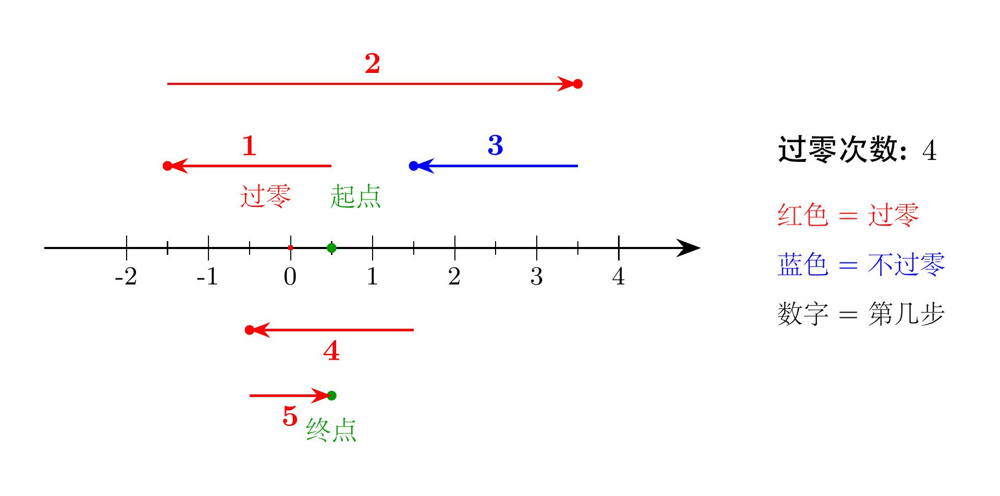
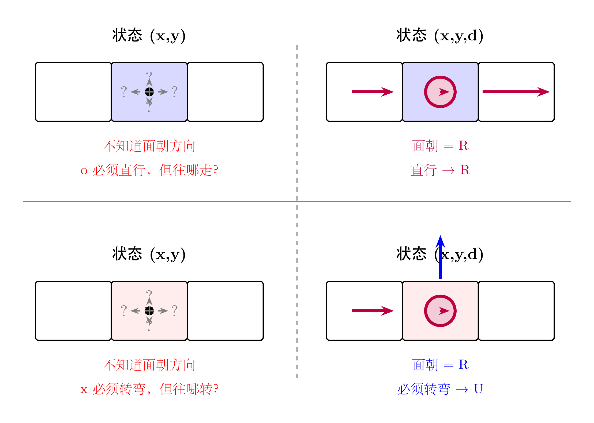
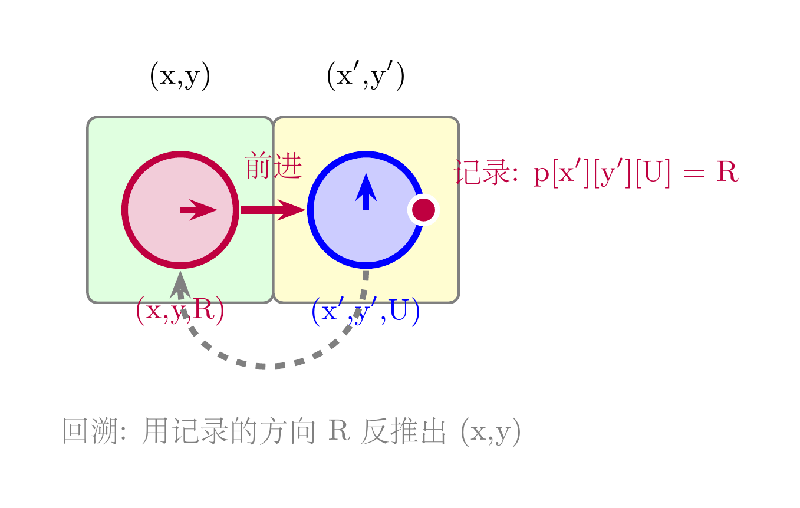
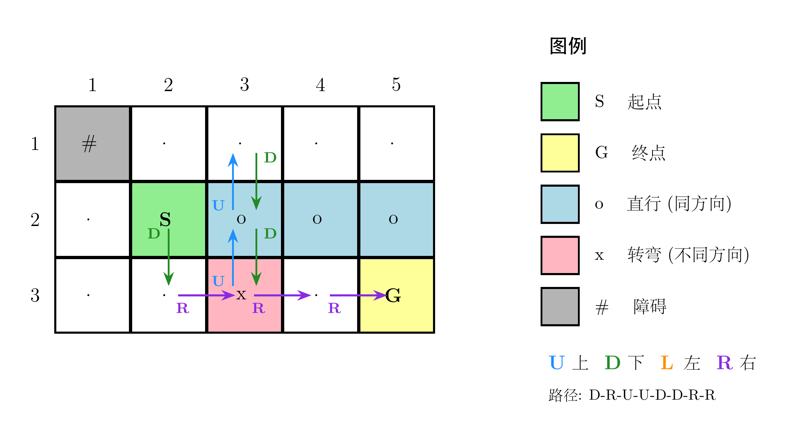

在 AtCoder Beginner Contest 的题单里，C 题和 D 题是一道隐形的分水岭。
A、B 两题通常只需要基础语法和简单模拟，只要学过编程就能做。但从 C 题开始，题目会要求你系统地枚举状态或者在图结构上搜索路径。如果这套思路没有打通，后面的 E、F 题基本无从谈起。
这次 ABC453 的 C 题和 D 题，恰好分别对应了算法竞赛中最核心的两种搜索策略：
- C 题 — 深度优先搜索（DFS）：数据范围很小，但决策空间是指数级的，需要枚举所有可能并统计最优解。
- D 题 — 广度优先搜索（BFS）：网格上的最短路问题，但状态的定义需要多花一步心思。
DFS 和 BFS 之所以重要，是因为它们处于整个算法知识体系的承上启下位置。向上，它们连接着递归、栈、队列这些最基础的数据结构；向下，它们延伸出记忆化搜索、动态规划、最短路算法、连通性判断等一系列进阶工具。能把这两道题吃透，说明你已经从"会写代码"跨入了"会设计算法"的阶段。
下面进入具体的题目分析。
高桥初始站在数轴上的坐标 0.5 处。接下来他要走 N 步，第 i 步可以往正方向或负方向走 L_i 的距离。问：他最多能穿过坐标 0 多少次？
题目保证没有任何一步的终点恰好落在 0 上。
N 的范围是 N ≤ 20。每一步只有两种选择（正或负），所以总共的决策组合数是 2^20 ≈ 100 万。这个量级对于现代计算机来说完全可以在瞬间跑完，因此直接 DFS 枚举所有方案即可。
需要注意的是：高桥一开始在 0.5，而每次移动的距离 L_i 都是整数。这意味着他永远站在半整数位置上，比如 0.5、1.5、-2.5 等等。所以他永远不会恰好踩到整数点，穿过 0 的判断只需要看起点和终点是否分别在 0 的两侧。
具体来说，如果把所有坐标乘以 2（消除小数），问题变成：从 1 出发，每次 ±2L_i，判断移动前后是否跨越了 0（即符号改变）。
下图展示了样例的最优路径：

图中绿色圆点是起点和终点，红色星号标记了每一次穿过坐标 0 的位置。5 步之中，最优方案可以穿过 0 共 4 次。
#include<bits/stdc++.h>
using namespace std;
typedef long long ll;
const int maxn = 22;
int L[maxn];
int n;
int maxpass = 0;
void dfs(ll x,int i,int pass){
if(i>n){
maxpass = max(pass,maxpass);
return;
}
dfs(x+L[i],i+1,pass+(x+L[i]>0 ^ x>0));
dfs(x-L[i],i+1,pass+(x-L[i]>0 ^ x>0));
}
int main(){
cin >> n;
for(int i=1;i<=n;++i) cin >> L[i];
for(int i=1;i<=n;++i) L[i] <<= 1;
dfs(1,1,0);
cout << maxpass << endl;
return 0;
}主函数中先把所有 L_i 乘以 2，这样初始位置 0.5 变成 1，后续所有计算都在整数域进行。
`dfs(x, i, pass)` 表示当前在坐标 x，准备走第 i 步，已经穿过 0 共 pass 次。每一步有两个分支：往正方向走或往负方向走。
判断这次移动是否穿过 0，用的是异或运算 `(x+L[i]>0 ^ x>0)`：如果移动前后坐标的正负号不同，说明跨越了 0，pass 加 1。
当 i 超过 n 时，所有步都走完了，用 maxpass 记录历史最优值。
给定一个 H × W 的网格迷宫。每个格子有以下几种类型：
- S 起点 / G 终点 / . 普通格子：可以自由选择下一步方向
- o：进入后必须直行（与上一步同方向）
- x：进入后必须转弯（不能继续上一步方向）
- #：墙，不能进入
判断是否存在从 S 到 G 的路径，如果存在输出一条具体路径。
这道题最容易卡住的地方，是状态的定义。
如果只用 (x, y) 作为状态，会出现什么问题？看看下面这张图：

左半边是"只有位置"的情况：你站在一个 o 格子上，题目要求你"直行"——但你不知道自己面朝哪个方向，所以根本不知道该往哪走。同样，站在 x 格子上要求"转弯"，也不知道该往哪转。
右半边是"位置 + 方向"的情况：当你知道自己面朝 R（右）时，o 格子要求直行，下一步只能继续往 R 走；x 格子要求转弯，下一步就只能转向上方 U。
这就是这道题最核心的设计点：状态必须包含当前面朝的方向 d。在代码中，d = 0,1,2,3 分别对应 R、D、L、U 四个方向。
状态定义为 (x, y, d)，表示"在位置 (x, y)，当前面朝方向 d，下一步将沿 d 方向移动"。
BFS 的转移规则如下：
1. 从当前状态 (x, y, d) 出发，先沿方向 d 移动一格，到达新位置 (nx, ny)
2. 检查 (nx, ny) 是否是墙或越界，如果是则跳过
3. 根据 (nx, ny) 的格子类型，确定下一步允许的方向 nd：
- 如果是 o，nd 必须等于 d（直行）
- 如果是 x，nd 不能等于 d（转弯）
- 如果是 . / S / G，nd 任意
4. 如果状态 (nx, ny, nd) 未被访问过，入队
BFS 不仅能判断是否存在路径，还能通过父指针数组还原出路径本身。这里有一个精妙的设计：

当我们从状态 (x, y, d) 沿方向 d 走到 (nx, ny)，并选择新方向 nd 时，我们把来向方向 d记录到 `p[nx][ny][nd]` 中。
为什么只需要记录方向 d 就够了？因为知道了 (nx, ny) 和来向方向 d，就可以反推出前一个位置：
px = nx - dx[d]
py = ny - dy[d]这样回溯时不需要额外存储坐标，只需要方向一个变量，既省空间又清晰。
下图展示了样例 1 的迷宫和一条可行路径：

路径为 D-R-U-U-D-D-R-R，从 S 出发经过 o 和 x 格子，最终到达 G。
#include<bits/stdc++.h>
using namespace std;
typedef long long ll;
const int maxn = 1003;
char s[maxn][maxn];
int f[maxn][maxn][4];
int p[maxn][maxn][4];
int dx[]={0,1, 0,-1};
int dy[]={1,0,-1, 0};
char dc[]={'R','D','L','U'};
struct node{
int x,y,d;
};
int main(){
int H,W; cin >> H >> W;
for(int i=1;i<=H;++i) scanf("%s",s[i]+1);
int sx,sy,gx,gy;
for(int i=1;i<=H;++i){
for(int j=1;j<=W;++j){
if(s[i][j]=='S') sx=i,sy=j,s[i][j]='.';
if(s[i][j]=='G') gx=i,gy=j,s[i][j]='.';
}
}
memset(f,-1,sizeof(f));
queue<node> q;
for(int i=0;i<4;++i){
q.push({sx,sy,i});
f[sx][sy][i]=0;
}
while(!q.empty()){
node u = q.front(); q.pop();
int nx = u.x + dx[u.d];
int ny = u.y + dy[u.d];
if(nx<1 || nx>H) continue;
if(ny<1 || ny>W) continue;
if(s[nx][ny]=='#') continue;
for(int i=0;i<4;++i){
if(s[nx][ny]=='x' && i==u.d) continue;
if(s[nx][ny]=='o' && i!=u.d) continue;
if(f[nx][ny][i]!=-1) continue;
f[nx][ny][i] = f[u.x][u.y][u.d]+1;
p[nx][ny][i] = u.d;
q.push({nx,ny,i});
}
}
if(f[gx][gy][0]==-1) return 0*puts("No");
cout << "Yes
";
int x=gx,y=gy,d=0;
vector<char> path;
while(x!=sx || y!=sy){
int pd = p[x][y][d];
int px = x-dx[pd];
int py = y-dy[pd];
path.push_back(dc[pd]);
x=px,y=py,d=pd;
}
reverse(path.begin(),path.end());
for(int i=0;i<path.size();++i)
cout << path[i];
cout << endl;
return 0;
}初始化阶段把 S 和 G 都替换成普通格子 `.`，方便后续统一处理。
BFS 开始前，起点 (sx, sy) 的四个方向状态都被初始化为距离 0 并入队。这是因为从起点出发时，四个方向都是可选的。
在 BFS 循环中，`u.d` 表示当前面朝的方向，先沿这个方向走一步到 (nx, ny)。然后根据新格子的类型筛选下一步允许的方向 i，满足条件的状态入队。
`p[nx][ny][i] = u.d` 记录的是：到达 (nx, ny) 且下一步面朝 i 时，上一步的面朝方向是 u.d。回溯时用这个方向反推前一个坐标。
最后从 G 倒着走回 S，收集路径上的方向字符，反转后输出。
C 题告诉我们：当数据范围允许时，大胆枚举。N = 20 的情况下，2^20 的搜索量在可接受范围内，DFS 是最直接的武器。
D 题告诉我们：状态的定义往往比算法本身更重要。如果只用 (x, y) 做状态，面对 o 和 x 格子就束手无策；加上方向维度 d 后，问题瞬间变得可解。
这两道题的共同点是——它们都不需要高深的算法模板，但对问题建模的敏感度有很高要求。而这种敏感度，正是从一次次实战中磨出来的。
AtCoder Beginner Contest 每周六晚上 20:00 开赛。如果你正在学习算法竞赛，强烈建议你把它变成每周固定的练习仪式。不需要每道题都做出来，哪怕只做 A~C，长期坚持下来，对题感的提升也是肉眼可见的。
我们下周六晚上见。